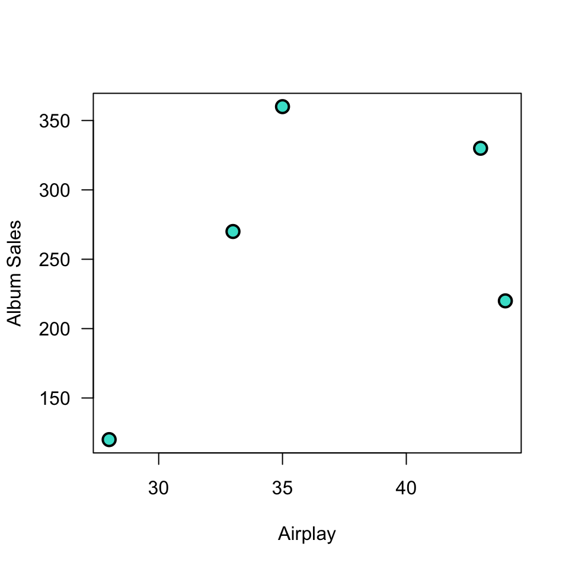
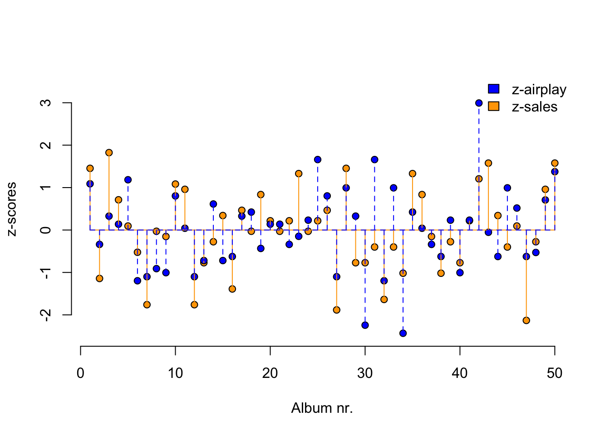
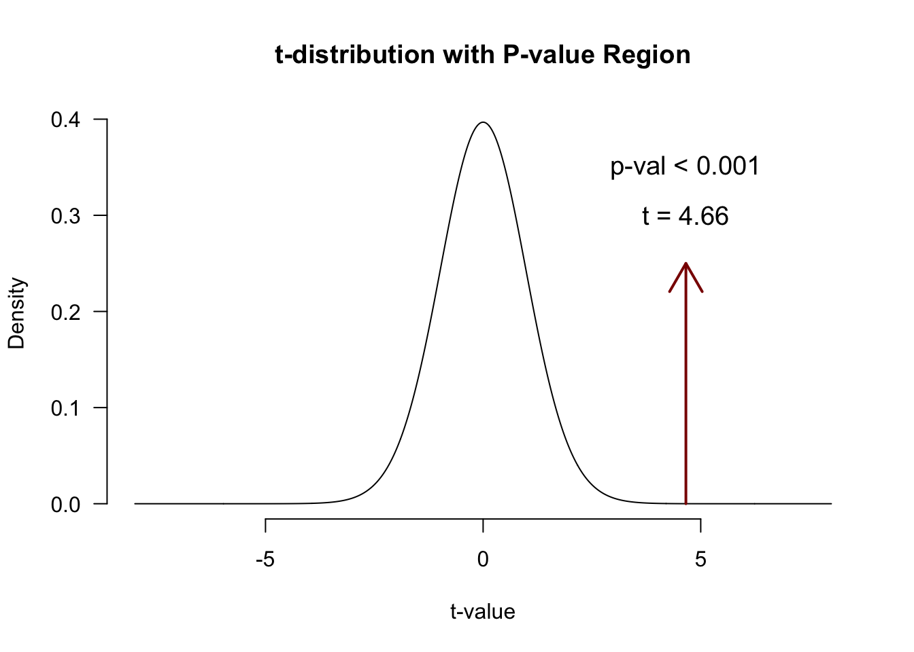

Correlation
Pearson Correlation

In statistics, the Pearson correlation coefficient, also referred to as the Pearson’s r, Pearson product-moment correlation coefficient (PPMCC) or bivariate correlation, is a measure of the linear correlation between two variables X and Y. It has a value between +1 and −1, where 1 is total positive linear correlation, 0 is no linear correlation, and −1 is total negative linear correlation. It is widely used in the sciences. It was developed by Karl Pearson from a related idea introduced by Francis Galton in the 1880s.
Source: Wikipedia
PMCC
\[r_{xy} = \frac{{COV}_{xy}}{S_xS_y}\] Where \(S\) is the standard deviation and \(COV\) is the covariance.
\[{COV}_{xy} = \frac{\sum_{i=1}^N (x_i - \bar{x})(y_i - \bar{y})}{N-1}\]
Plot correlation
Plot correlation

Plot correlation
\[(x_i - \bar{x})(y_i - \bar{y})\]
Guess the correlation

Load data
n <- 50
data <- read.csv("Album Sales.csv")[, -4]
data <- data[1:n, ] # take the first 50 rows of the album sales data set from Field
DT::datatable(data, rownames = FALSE, options = list(searching = FALSE, scrollY = 415, paging = F, info = F))Explaining variance
Standardize
\[z = \frac{x_i - \bar{x}}{{sd}_x}\]
z.sales <- (data$sales - mean(data$sales)) / sd(data$sales)
z.airplay <- (data$airplay - mean(data$airplay)) / sd(data$airplay)Standardize
Standardize

Covariance
\[{COV}_{xy} = \frac{\sum_{i=1}^N (x_i - \bar{x})(y_i - \bar{y})}{N-1}\]
mean.sales <- mean(sales, na.rm=TRUE)
mean.airplay <- mean(airplay, na.rm=TRUE)
delta.sales <- sales - mean.sales
delta.airplay <- airplay - mean.airplay
prod <- (sales - mean.sales) * (airplay - mean.airplay)
covariance <- sum(prod) / (N - 1)
covariance[1] 474.1388Covariance
Correlation
\[r_{xy} = \frac{{COV}_{xy}}{S_xS_y}\]
correlation <- covariance / ( sd(sales) * sd(airplay) ); correlation[1] 0.5580504correlation[1] 0.5580504Correlation
\[r_{xy} = \frac{{COV}_{xy}}{S_xS_y}\] \[{COV}_{xy} = \frac{\sum_{i=1}^N (x_i - \bar{x})(y_i - \bar{y})}{N-1}\]
cor( sales, airplay) # correlation[1] 0.5580504cor(z.sales, z.airplay) # correlation of z-scores[1] 0.5580504# covariance of z-scores
sum(z.sales * z.airplay ) / (N - 1)[1] 0.5580504Plot correlation
Significance of a correlation
\[t_r = \frac{r \sqrt{N-2}}{\sqrt{1 - r^2}} \\ {df} = N - 2\]
\[ \begin{aligned} H_0 &: t_r = 0 \\ H_A &: t_r \neq 0 \\ H_A &: t_r > 0 \\ H_A &: t_r < 0 \\ \end{aligned} \]
r to t
df <- N-2
t.r <- ( correlation*sqrt(df) ) / sqrt(1-correlation^2)
cbind(t.r, df) t.r df
[1,] 4.65926 48Visualize
One-sample t-test

Partial correlation
Venn diagram of Variance

Partial correlation
\[\LARGE{r_{xy \cdot z} = \frac{r_{xy} - r_{xz} r_{yz}}{\sqrt{(1 - r_{xz}^2)(1 - r_{yz}^2)}}}\]
adverts <- data$adverts
cor.sales.airplay <- cor(sales,airplay)
cor.sales.adverts <- cor(sales,adverts)
cor.airplay.adverts <- cor(airplay,adverts)
data.frame(cor.sales.airplay, cor.sales.adverts, cor.airplay.adverts) cor.sales.airplay cor.sales.adverts cor.airplay.adverts
1 0.5580504 0.504637 -0.05460507numerator <- cor.sales.airplay - (cor.sales.adverts * cor.airplay.adverts)
denominator <- sqrt( (1-cor.sales.adverts^2)*(1-cor.airplay.adverts^2) )
partial.correlation <- numerator / denominator
partial.correlation[1] 0.6793231Significance of partial correlation
One-sample t-test